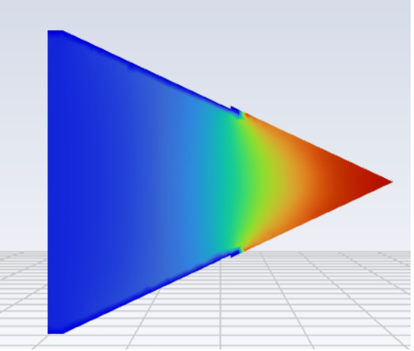
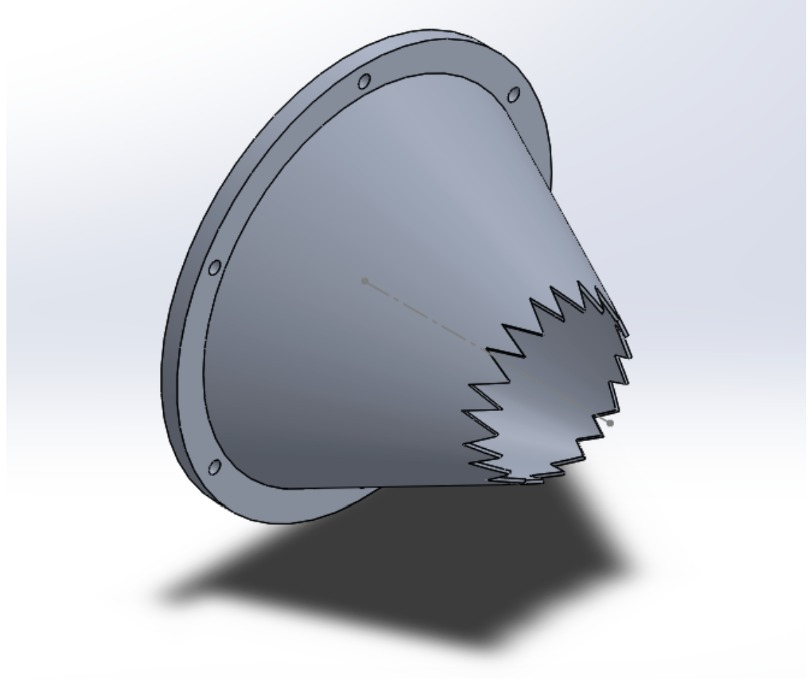
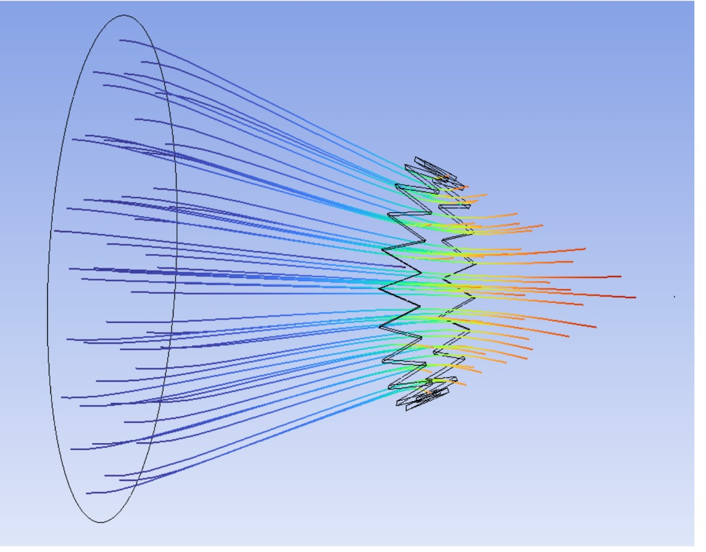
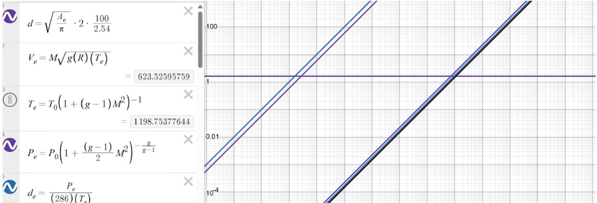
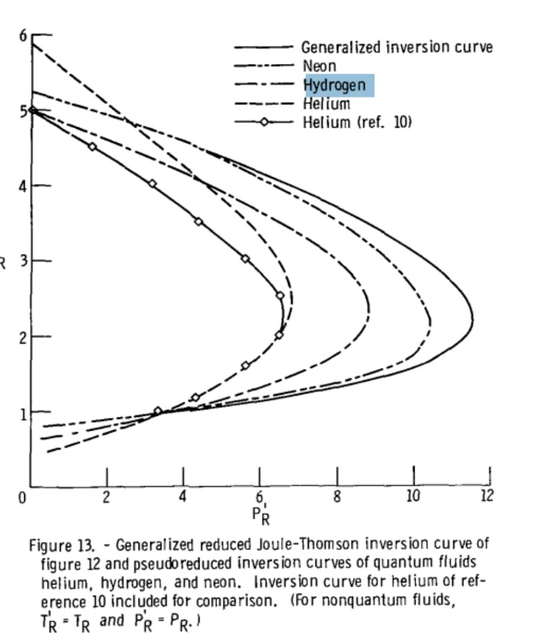

Penn Jet Propulsion · Engine Team
Hydrogen Micro-Turbojet
On Penn Jet Propulsion's engine team, I designed a converging nozzle for a student-built hydrogen micro-turbojet and studied the fuel-pressure reduction system.



Nozzle requirements and constraints.
The nozzle needed to accelerate the exhaust toward Mach 0.9 while remaining subsonic. It also had to fit the engine diameter, connect to the existing structure, and use geometry that could be manufactured and tested.
My contribution
- Used isentropic compressible-flow relationships to size the nozzle exit area and estimate exit conditions.
- Developed a converging CAD geometry around engine diameter, packaging, and mounting constraints.
- Added an integration flange and explored chevron geometry as a potential noise-reduction concept.
- Used CFD to evaluate flow acceleration, velocity distribution, separation, and downstream streamlines.
- Compared simulated exit velocity with the analytical prediction to validate the design workflow.
- Evaluated the Joule–Thomson behavior of hydrogen across a staged high-pressure regulation system.
Analytical nozzle sizing.
I used isentropic nozzle relations to calculate the exit temperature, pressure, density, velocity, and required area for the target Mach number and mass flow. Those values became the reference for the CAD model and CFD setup.
I also varied uncertain inputs to see how sensitive the exit dimensions were across the expected operating range.

CAD and engine integration.
I turned the calculated dimensions into an axisymmetric converging nozzle in SolidWorks. The model included the mounting flange, attachment pattern, and the clearances required by the engine assembly.
I also added a chevron concept at the exit as a possible noise-reduction feature. I have not yet modeled or tested its acoustic effect, so the current CFD is limited to the aerodynamic behavior.
CFD validation.
I used CFD to compare the outlet velocity with the analytical target and to check for separation, recirculation, and large nonuniformities. The velocity contour showed how the flow accelerated through the converging section.
I also plotted streamlines downstream of the nozzle to inspect the exhaust pattern and the local flow around the chevrons.
Hydrogen pressure regulation.
The planned fuel system reduces hydrogen from about 200 atm in storage to about 20 atm at the engine through two regulator stages. I studied the Joule–Thomson effect to estimate the temperature change and check for freeze-out risk in the regulators and tubing.
Near room temperature, hydrogen can warm during throttling under the relevant pressure conditions. I used published inversion-curve data to determine the expected direction of the temperature change and inform the regulator plan.

Work completed so far.
So far, I have taken the nozzle from analytical sizing to CAD and CFD while also studying how the hydrogen supply conditions affect the rest of the engine. The next steps are refining the nozzle profile, completing structural checks, and validating the design with test data.